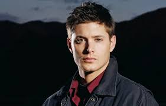

RESUMO
Caçador experiente com ampla atuação em gerenciamento de crises sobrenaturais,
combate tático e liderança em situações de alto risco. Especialista em investigação, rastreamento, improviso sob pressão e proteção de equipes.
Histórico consistente de resolução de ameaças consideradas impossíveis, com forte senso de lealdade, resiliência e tomada de decisão rápida.
Perfil adaptável, disciplinado e orientado à sobrevivência.